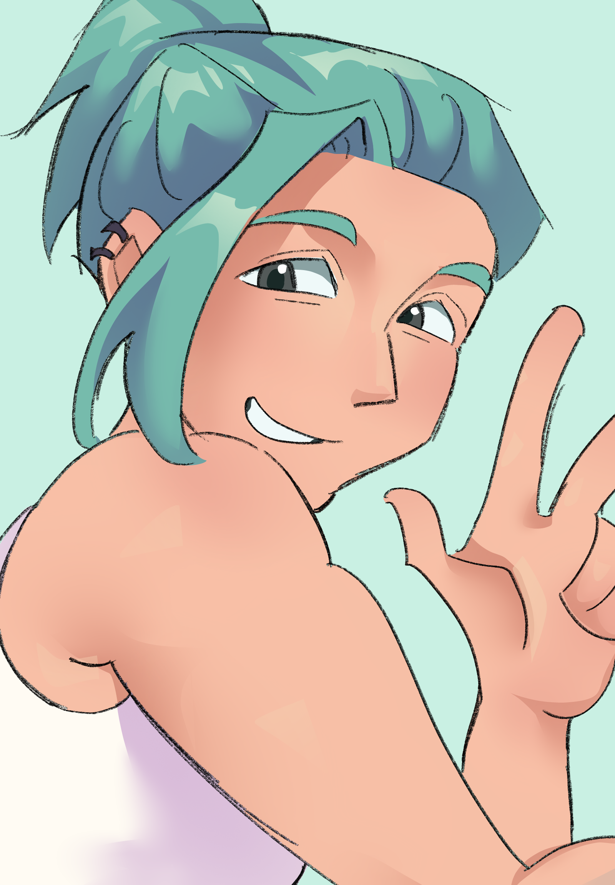
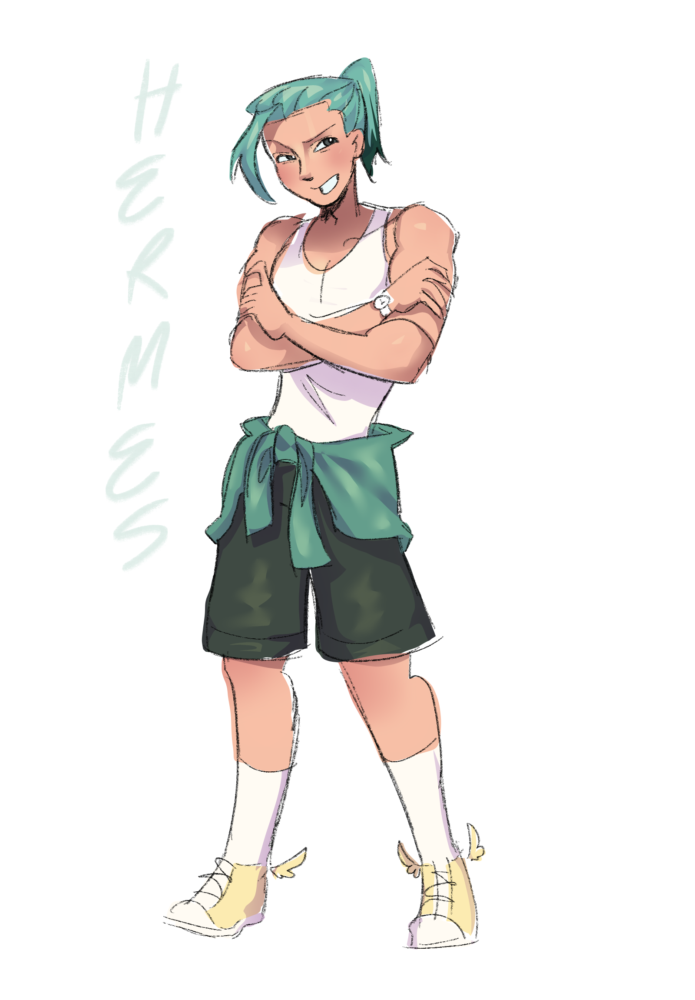

Information
เฮอร์มีสเป็นบุตรแห่งซุสและไลยาดีสเมอา ทรงเป็นพระเจ้าโอลิมปัสที่มีพระชนมายุน้อยที่สุดเป็นอันดับสอง และเป็นเทพแห่งการส่งสาร
Myth
เฮอร์มีสประสูติในช่วงรุ่งเช้า ณ ถ้ำบนภูเขาไซลีน (Cyllene) ในแคว้นอาร์คาเดีย แต่แทนที่จะเป็นทารกทั่วไปที่นอนร้องไห้ เฮอร์มีสกลับเติบโตและมีสติปัญญาอย่างรวดเร็วชนิดที่ว่าพอถึงช่วงเที่ยงวัน เขาก็ลุกออกจากเปลมาเดินเล่นเองได้แล้ว ขณะที่เดินเล่นอยู่หน้าถ้ำ เฮอร์มีสได้พบกับเต่าตัวหนึ่ง เขาเกิดไอเดียสร้างสรรค์จึงได้ฆ่าเต่าตัวนั้นแล้วนำกระดองมาใช้ทำเป็นโครงพิณ จากนั้นก็นำเอ็นวัวมาขึงตึงจนกลายเป็นเครื่องดนตรีที่เรียกว่า ไลร์ (Lyre) หรือพิณกรีกโบราณ ทารกน้อยเฮอร์มีสบรรเลงเพลงสรรเสริญการประสูติของตัวเองอย่างเพลิดเพลินก่อนจะเริ่มเบื่อในช่วงเย็น
เฮอร์มีสเกิดนึกสนุกและแอบหนีออกจากถ้ำไปยังทุ่งหญ้าแห่งหนึ่ง ซึ่งเป็นที่เลี้ยงฝูงวัวศักดิ์สิทธิ์ของเทพอพอลโลฃ (ซึ่งมีศักดิ์เป็นพี่ชายต่างมารดาของเขา) เฮอร์มีสได้แสดงความเจ้าเล่ห์โดยการคัดเลือกวัวที่ดีที่สุด 50 ตัว แล้วทำการพรางร่องรอยด้วยวิธีแยบยล ต้อนวัวให้เดินถอยหลัง เพื่อให้รอยเท้าชี้ไปในทิศทางตรงกันข้ามผูกกิ่งไม้และไม้กวาดไว้ที่เท้าและหางของวัว เพื่อช่วยลบและกวาดร่องรอยตามพื้นดิน เฮอร์มีสต้อนฝูงวัวไปซ่อนไว้ในถ้ำอีกแห่งหนึ่ง จากนั้นได้ทำการบูชาทำพิธียัญญ์วัว 2 ตัวเพื่อถวายแด่เทพเจ้าโอลิมปัส (รวมถึงสร้างแท่นบูชาให้ตัวเองด้วย) ก่อนจะรีบวิ่งกลับมานอนห่อผ้าอ้อมทำตัวเป็นทารกผู้บริสุทธิ์อยู่ในเปลตามเดิม
เช้าวันต่อมา อพอลโลพบว่าวัวของตนหายไปและพยายามตามรอยแต่ก็ต้องสับสนกับรอยเท้าที่แปลกประหลาด จนกระทั่งไปสืบรู้จากคนเลี้ยงสัตว์ในแถบนั้น (บางตำนานระบุว่าชื่อ บัตโตส) อพอลโลจึงตามมาถึงถ้ำของนางไมอาและคาดคั้นทารกเฮอร์มีส แต่เฮอร์มีสกลับทำไขสือและแย้งว่า "ข้าพเจ้ายังเป็นเพียงทารกเพิ่งเกิดได้วันเดียว จะไปมีปัญญาขโมยฝูงวัวตัวใหญ่ขนาดนั้นได้อย่างไร" อพอลโลไม่หลงกลและอุ้มทารกเฮอร์มีสขึ้นไปฟ้องมหาเทพซุสบนยอดเขาโอลิมปัส เมื่อซุสได้ฟังเรื่องราวทั้งหมด แทนที่จะพิโรธ พระองค์กลับรู้สึกขบขันและเอ็นดูในความฉลาดซุกซนของบุตรชายคนเล็กคนนี้เป็นอย่างมาก อย่างไรก็ตาม ซุสได้สั่งให้เฮอร์มีสนำฝูงวัวไปคืนแก่อพอลโล